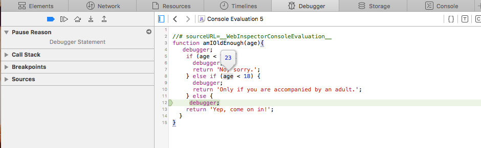

Notes PART I
The Window Object
- Every JavaScript environment has a global object. Any variables that are created in the global scope are actually properties of this object, and any functions are methods of it. In browser environment, the global object is the window object, which represents the browser window that contains a web page.
- The Browser Object Model (or BOM for short) is a collection of properties and methods that contain information about the browser and computer screen.
- BOM only makes sense in a browser environment.
- This means that other environments (such as Node.js) probably won't have a window object, although they will still have a global object; for example, Node.js has an object called global.
- The window.location property is an object that contains information about the URL of the current page. For example: href, protocol, host, hostname, port, pathname and more.
- A new window can be opened using the window.open() method. This can also be
assigned to a variable, so the window can then be referenced later in the code:
const popup = window.open('https://sitepoint.com','SitePoint','width=400,height=400,resizable=yes');
Don't forget: close() | moveTo() | resizeTo()
- The window.screen object contains information about the screen the
browser is displayed on.
Properties: height, width, availHeight, availWidth, colorDepth
- Each window window object contains a document object. This object has properties and methods that deal with the page that has been loaded into the window.
- Cookies are small files that are saved locally on a user's computer. Cookies can be used to store information that can then be retrieved between requests. Cookies are also limited to storing up to 4KB of data, although 20 cookies are allowed per domain, which can add up to quite a lot of data.
- Cookies take the form of a text file that contain a list of name/value pairs separated by
semicolons. For example, a cookie file might contain the following information:
"name=Superman; hero=true; city=Metropolis"
- Timing Functions:
setTimeout() :Accepts a callback to a function as its first parameter and a number of milliseconds as its second parameter. Try entering the following example into a console. It should show an alert dialog after three seconds (that's 3000 milliseconds):
window.setTimeout( () => alert("Time's Up!"), 3000);<< 4
setInterval() :Works in a similar way to window.setTimeout(), except that it will repeatedly invoke the callback function after every given number of milliseconds.
The previous example used an anonymous function, but it is also possible to use a named function like so:function chant(){ console.log('Beetlejuice'); }
- The setTimeOut() and setInterval() methods can be used to animate elements on a web page.
MDN The Content Template Element
- The <template> HTML element is a mechanism for holding HTML
that is not to be rendered immediately when a page is loaded but may be instantiated
subsequently during runtime using JavaScript.
The only standard attributes that the template element supports are the global attributes.
A DocumentFragment is not a valid target for various events, as such it is often preferable to clone or refer to the elements within it. Example:
HTML
<div id="container"></div><template id="template"><div>Click me</div></template>JavaScript
const container = document.getElementById("container");
const template = document.getElementById("template");
function clickHandler(event) {
event.target.append(" — Clicked this div");
}
const firstClone = template.content.cloneNode(true);
firstClone.addEventListener("click", clickHandler);
container.appendChild(firstClone);
const secondClone = template.content.firstElementChild.cloneNode(true);
secondClone.addEventListener("click", clickHandler);
container.appendChild(secondClone);Result
firstClone is a DocumentFragment instance, so while it gets appended inside the container as expected, clicking on it does not trigger the click event. secondClone is an HTMLDivElement instance, clicking on it works as one would expect.
Notes PART II
Testing and Debugging
- Errors and bugs are a fact of life in programming ― they will always be there. A ninja programmer will try to do everything to minimize errors occurring, and find ways to identify and deal with them quickly.
- They are usually caused by one of the following:
- System error ― there's a problem with the system or external devices with which the program is interacting.
- Programmer error ― the program contains incorrect syntax or faulty logic; it could even be as simple as a typo.
- User error ― the user has entered data incorrectly, which the program is unable to handle. - An exception is an error that produces a return value that can then be used by the program
to deal with the error. For example:
unicorn();<< ReferenceError: unicorn is not defined - A warning can occur if there's an error in the code that isn't enough to cause the program
to crash. This means the program will continue to run after a warning. This might sound
good, but it can be problematic, since the issue that produced the warning may cause the
program to continue running incorrectly. Example:
pi = 3.142;<< JavaScript Warning: assignment to undeclared variable - Debugging is the process of finding out where bugs occur in the code and then dealing with them. In many cases, the point at which an error occurs is not always where it originated, so you'll need to run through the program to see what's happening at different stages of its execution.
- One of the most useful commands is the debugger keyword. This will create a breakpoint in your code that will pause the execution of the code and allow you to see where the program is currently up to.
- The example below shows how thedebugger command can be used in the amIOldEnough() function. If you try entering the code below into your browser's console, then invoke theamIOldEnough() function, the browser's debugging tool will automatically kick in and you'll be able see the value of the age variable by hovering over it: 
- Extra Source:
https://www.youtube.com/watch?v=5ukeeimOFLU
How Single-Page Applications Work
- A single-page application (SPA) is a website that re-renders its content in response to navigation actions (e.g. clicking a link) without making a request to the server to fetch new HTML.
- An internal state SPA can only load the app's entry.
A location-based SPA render can immediately render the desired content - While the URL in the address bar is what users see and interact with, SPAs use window.location. This allows you to interact with the different parts of the URL without having to parse it yourself. The window.location properties map directly from the URL
- Instead of creating a new Document for every location, the History
API re-uses the activeDocument by updating it to reflect the new
location.
The History API has three core functions: pushState(), replaceState(), and go(). These (and the rest of the API) are accessed via window.history.
The HTML5 Template Element
- It provides an easy way to define a reusable fragment of HTML that can be manipulated just like you would the contents of the document itself, but without the overhead of actually updating the DOM or having to compile and parse strings of HTML.
- Anything inside of a <template> tag gets parsed just like
regular HTML, except:
- It doesn't get rendered.
- `<script>`tags inside of it don't get run.
- `<style>` tags inside of it don't get evaluated.
- It doesn't load any external resources (so you won't see any requests for the contents of `<img>` or `<embed>` tags).
- It can be accessed as a `DocumentFragment` instance via the special `content` property of the `<template>` element.